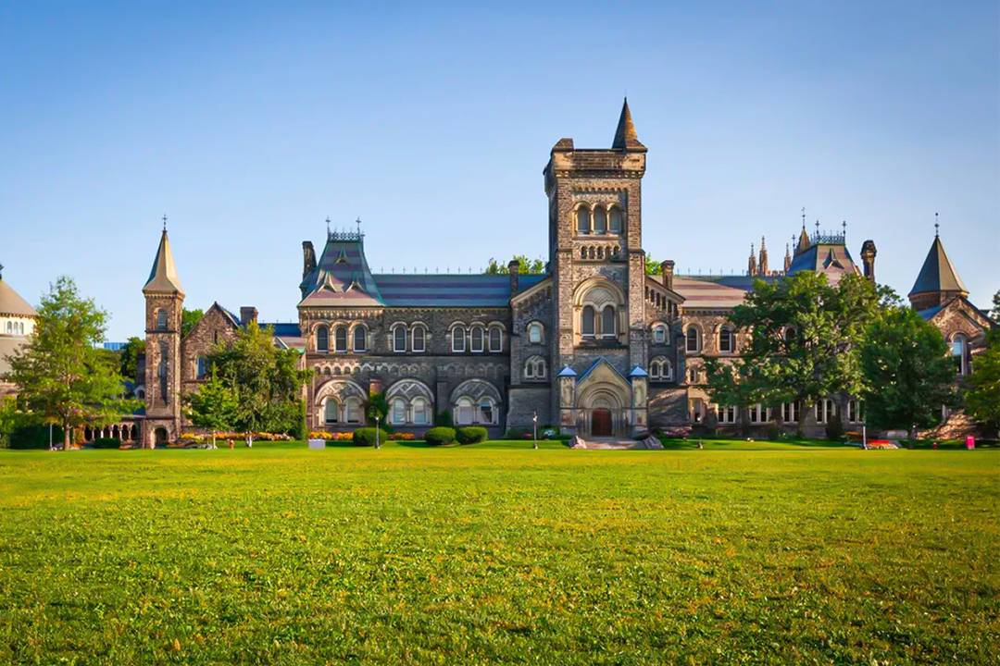
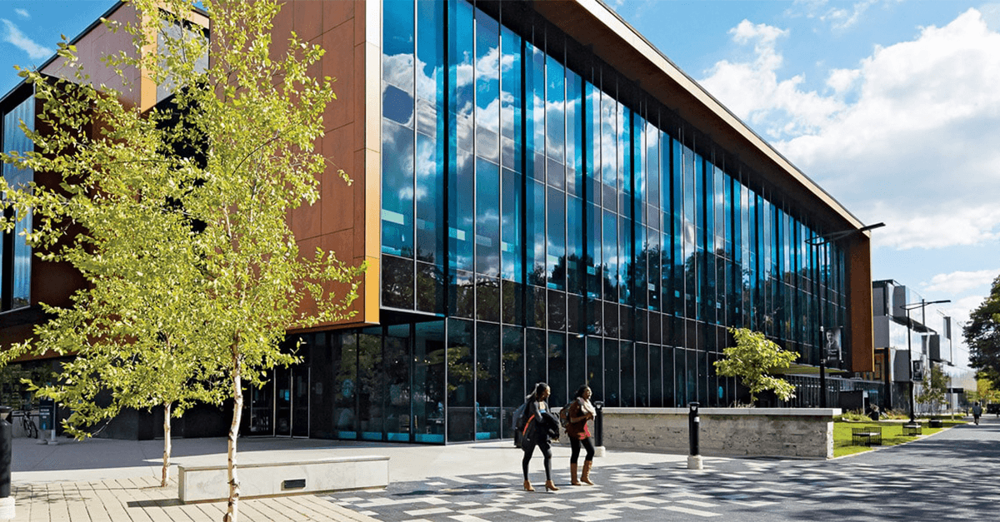

The 3 Campuses of University of Toronto
University of Toronto has 3 campuses located respectively at Saint George, Mississauga, and Scarborough. The following is a detailed introduction to each of the campuses.
University of Toronto Saint George Campus
The University of Toronto Saint George Campus is located in the heart of Downtown Toronto, and it is the primary campus of UofT. It offers a vast range of programs and is renowned for its research facilities.
Famous Alumni:
- Donald Sutherland, Actor
- Margaret Atwood, Author
- Roberta Bondar, Astronaut
- Naomi Klein, Author and Social Activist
University of Toronto Scarborough Campus
The University of Toronto Scarborough, commonly known as UTSC, offers a wide variety of cooperative education programs and a more suburban campus experience.
Famous Alumni:
- Paul Bernardo, Criminal
- Ryan Coelho, Motivational Speaker
- Lisa Ray, Actress and Model
- Shaun Chen, Actor and Host
University of Toronto Mississauga Campus
Located in the western part of the Greater Toronto Area, the University of Toronto Mississauga (UTM) offers a variety of undergraduate and postgraduate degrees and also houses the Institute of Management and Innovation.
Famous Alumni:
- Harold T. Shapiro, Economist and University President
- Brad Seligman, Civil Rights Attorney
- Irene Gentle, Editor
- Jennifer Valentyne, Television Host